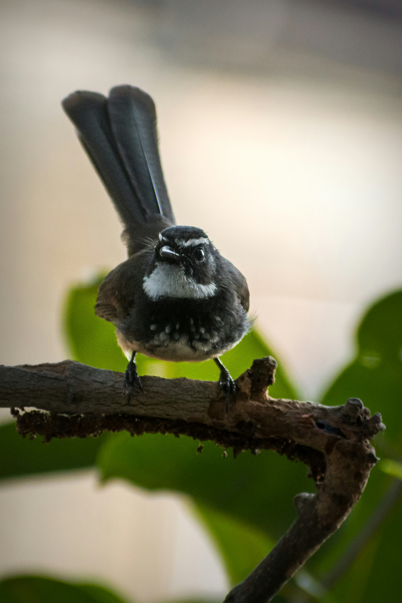

The White-Browed Fantail is a small insectivorous bird with a boldly patterned face, pale eyebrow, dark body, and a broad fan-shaped tail. It is an energetic bird that constantly flicks and spreads its tail while moving through foliage. It catches insects by making short aerial sallies from branches and is commonly found in forests, gardens, scrub, and woodland edges.